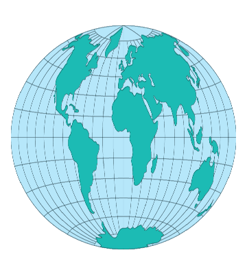

Decision Support System for Map Projections of Small Scale Data
Usage
Lambert Azimuthal Equal Area

Usage:
*
The last major
projection proposed by Johann Heinrich Lambert was the Lambert Azimuthal
Equal-Area projection. Also known as the Zenithal or simply Azimuthal
Equal-Area projection, the Lambert Azimuthal Equal-Area projection has
equal area and the azimuthal property of showing true direction from the
center of this projection. Scale varies by less at any given distance
from the center of the projection than the scale of any other azmuthal
projection.
A common variation of the
Lambert Azmuthal is called Hammer or
Hammer-Aitoff.
* Usage information source:
Snyder, John P. Map Projections - A Working Manual Paper U.S. Geological
Survey Professional Paper 1395. Washington: United States Government
Printing Office, 1987.